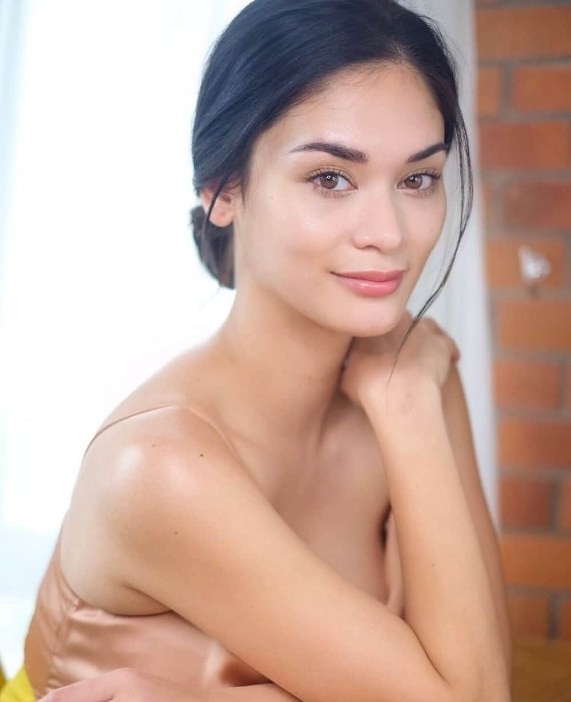

/ 2015-2021 /
THEO WIKIPEDIA
Hoa hậu Hoàn vũ (tiếng Anh: Miss Universe) là một cuộc thi sắc đẹp quốc tế lớn nhất trên thế giới về mức độ hấp dẫn và khốc liệt.
Cuộc thi được bắt đầu vào năm 1952 do công ty quần áo Pacific Mills ở California sáng lập.
Cuộc thi thu hút hơn 80 quốc gia tham dự mỗi năm
Miss Universe luôn hướng đến tiêu chí tìm kiếm một cô gái bản lĩnh,thông minh, tự tin, sang trọng và xinh đẹp .
Các cô gái chiến thắng sẽ thực hiện công việc thiện nguyện và truyền cảm hứng đến tất cả mọi người trên thế giới trong suốt nhiệm kỳ của mình.
| Năm | Nơi tổ chức | Đại diện quốc gia chiến thắng | Họ và tên |
|---|---|---|---|
| 2015 | Las Vegas, Hoa Kỳ | Philippines | Pia Wurtzbach |
| 2016 | Mainila, Philippines | Pháp | Iris Mittenaere |
| 2017 | Las Vegas,Hoa Kỳ | Nam Phi | Demi-Leigh Neil-Peters |
| 2018 | Băng Cốc,Thái Lan | Philippines | Catriona Gray |
| 2019 | Atlanta, Hoa Kỳ | Nam Phi | Zozibini Tunzi |
| 2020 | Hollywood,Hoa Kỳ | Mexico | Andrea Meza |
| 2021 | Eilat, Isreal | Ấn Độ | Harnaaz Kaur Sandhu |
 Pia Wurtzbach (sinh ngày 24 tháng 9 năm 1989)
Cô là nữ người mẫu, diễn viên nổi tiếng tại Philippines. Ngoài ra Pia còn đảm nhận vai trò MC
và là chuyên gia trang điểm.
Cô là con lai 2 dòng máu là Phillippines và Đức
Pia đã thi Hoa Hậu Hoàn Vũ Phillippines liên tiếp trong 3 năm để có cơ hội đại diện quốc gia dự thi quốc tế. May mắn đã mỉm cười với cô khi lần thứ 4 tham dự cuộc thi nhan sắc cô
cô đã xuất sắc trở thành Hoa Hậu Hoàn Vũ Thế Giới 2015
Cô được mệnh danh là Hoa Hậu có phần ứng xử trôi chảy, ngọt ngào nhất.
Có 1 sự cố đã xảy ra gây chấn động truyền thông thế giới rằng MC công bố hoa hậu Colombia là Ariadna Gutierrez đã trở thành tân hoa hậu Hoàn vũ thế giới 2015
nhưng chỉ sau đó đã khẳng định đây là một sai sót. Tân hoa hậu thực sự của cuộc thi năm nay là hoa hậu Philippines. Sau đó mọi người đều đùa vui rằng Pia Wurtzbach
là hoa hậu nổi tiếng nhất của Miss Universe.